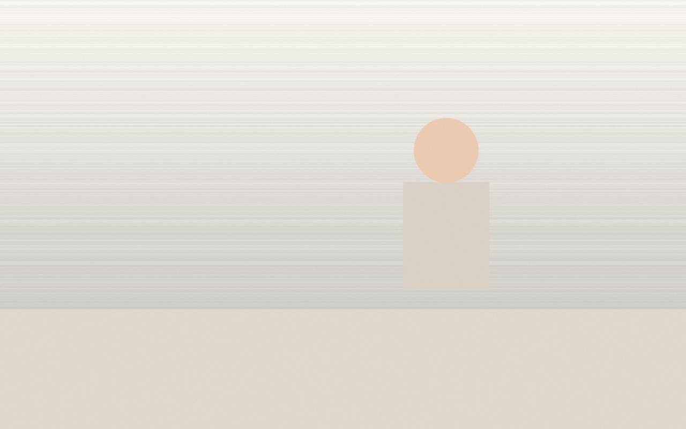

Тривога, нав’язливі думки
Стан: постійна напруга, складно зупинити думки.
Фокус: тригери, мисленнєві пастки, навички саморегуляції.
Практики: CBT-інструменти, експозиції/поведінкові експерименти за потреби.
Результат: зниження тривоги, повернення керованості.